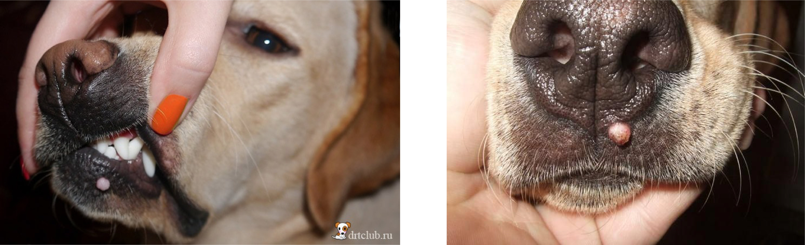

.gif)

הקאות יכולות להיגרם ממספר סיבות:
1. הגור אכל מהר מידיי את הארוחה שלו
2. הגור אכל משהו שהגוף שלו לא יכול לעכל וזו הדרך להוציא
3. סיבה רפואית אחרת
- במידה ותדירות ההקאות אינה גבוהה (הקאה חד פעמית או פחות מ3 פעמים בשעה):
יש לעשות צום מים של שעתיים – ארבע שעות ולאחר מכן לתת כמות קטנה של מים ולעקוב אחר הגור שהוא
אינו מקיא פעם נוספת.
- במידה והגור הקיא את כל הארוחה שסיים זה עתה יש לתת לגור רק מים עד לארוחה הבאה שלו,
אין צורך
להשלים את הארוחה שהקיא!!
- במידה ומקיא 4-6 פעמים בשעה להתקשר לאחראי הבריאות ולעדכן בגוריפורט.
שלשול הינו צואה מימית. אם הצואה במרקם שניתן להרים את רובה עם שקית היא אינה שלשול.
כאשר מזהים שלשול נפעל לפי הנוהל הבא:
1. צום מלא.
דילוג על 2 ארוחות (במידה והגור אוכל 3 פעמים ביום) או על ארוחה אחת (במידה והגור אוכל פעם או פעמיים ביום).
2. ביומיים הקרובים יש לתת לגור לאכול אורז שבושל אך ורק במים (בלי שמן או תבלינים). כמות האורז צריכה להיות זהה לכמות האוכל שהגור מקבל. יום לאחר מכן, נערבב את האורז יחד עם האוכל היבש שלו ביחס של 50/50. לאחר מכן נחזיר אותו לתזונה שלו בהדרגה במשך יומיים עד שיחזור לאכול רק את האוכל הרגיל שלו. סה"כ כ-4 ימי טיפול.
מה עושים אם הגור לא אוהב אורז? כמה טיפים כדי לגרום לו לאכול אותו בכל זאת:
- להוסיף לאורז מעט אבקת מרק בשרית
- לערבב את האורז עם מעט גרגירים מהאוכל היבש שהמסנו במים רותחים
- להוסיף לאורז מעט דלעת מבושלת
שלשולים הינה תופעה שכיחה מאוד !! במידה והשלשולים נמשכים גם לאחר תהליך הטיפול או במהלכו - עדכנו בגוריפורט. כתבו שביצעתם צום ותזונה של אורז.
במידה ויש הפרשות, ניתן להקל על הגור על ידי קומפרסים של תה כ4 פעמים ביום:
עשו שימוש בתיון של
תה רגיל
(לא ירוק, לא קמומיל ולא כל תמצית אחרת). הכינו כוס תה ללא סוכר. המתינו שהטמפרטורה תתקרר. טבלו צמר גפן ונקו את העין של הגור.
כשהמים הופכים לפושרים נטבול צמר גפן וננקה את העין של הגור. חשוב להחליף צמר גפן בין כל טבילה
לטבילה, אין להשתמש באותו צמר
הגפן לשתי העיניים בכדי למנוע את המעבר של הדלקת מאחת לשנייה.
הפרשות מהעיניים עלולות להעיד על דלקת עיניים שמתפתחת או בעיה אחרת. לכן במידה והעין נראית אדומה, נפוחה או מגרדת וקיימות הפרשות ירוקות - עדכנו בגוריפורט.
קודם כל חשוב לדעת כי הפרשות באוזניים זה דבר שגרתי אצל גורים.
נחשוד בדלקת כאשר:
1. ההפרשות כהות
2. ישנו ריח חריף מהאוזן
3. הגור מתגרד הרבה באזור
4. הגור מתנער הרבה
5. לעיתים האוזן המודלקת תהיה נמוכה יותר מהבריאה כאשר הגור מסתכל עלינו
6. הגור מפגין כאב למגע באזור האוזניים
כן! בין הגילאים 4-8 חודשים יחליף הגור את כל שינוי.
החלפת השיניים יכולה להתבטא בכתמי דם על הצעצועים של הגור, חוסר תיאבון (מכיוון שכואב לו ללעוס
את האוכל) או ריח רע מהפה.
במידה והגור לא רוצה לאכול ניתן להרטיב לו מעט את האוכל על מנת להקל עליו את הלעיסה.
טיפים להעברת ריח הפה !
- תנו לגור חתיכות גזר לאכול - זה יעזור בניקוי השיניים
- שימו במים של הגור מעט פטרוזיליה
- תנו לגור מעט חמאת בוטנים טבעית ללא תוספת סוכר (2-3 כפיות בשבוע)
- השתמשו בענף רוזמרין והעבירו אותו בפיו של הגור כך שהשיניים שלו יחתכו את העלים
- תכלס, תמיד ניתן לקנות חטיפים דנטליים מחנות חיות
חיסון כלבת - ניתן בגיל 3 חודשים. אחריות לביצוע החיסון הוא עליכם. יש ללכת
לוטרינר עירוני!!
לרשום את שם הגור על שמכם בעירייה. להחתים על הטופס שקיבלתם ביום קבלת הגור. זיהוי הגור מתבצע ע"י השבב שכבר הכנסנו לגור.
חיסון משושה - ניתן ב 4 מנות. פעם ראשונה לפני שהגור ניתן לכם. עוד 3 מנות לאחר קבלתו. החיסונים הללו ניתנים לגור על ידי צוות המרכז בעת הביקור אצלכם.
זריקה לטיפול נגד תולעת הפארק תינתן אחת לחודשיים על ידי מדריך מהמרכז כל חודש אי זוגי, לכל חייו. הטיפול מתחיל בגיל 4 חודשים.
טיפול נגד תולעי מעיים יינתן בכדורים אחת לחצי שנה.
שימו לב! על מנת לקבל את ההחזר על חיסון הכלבת יש להחזיר קבלה על שם "מרכז ישראלי לכלבי נחיה"
בנוסף, בעת קבלת חיסון הכלבת בעת רישום בעירייה יש להוסיף לשם של המשפחה "מרכז ישראלי לכלבי נחיה"
דוגמה: מרכז ישראלי לכלבי נחיה, ישראל ישראלי
סירוס לזכרים - במידה והגור אינו מועמד להיות כלב רבייה, בערך בגיל 6 חודשים תתבקשו על ידי המרכז להביא את הגור לסירוס ולאחריו הגור ישהה לאשפוז בפנסיון המרכז ל-10 ימים בערך.
ייחום בנקבות - החל מגיל 9 חודשים וברגע הופעת סימני ייחום אצל הגורה (דימום), תתבקשו על ידי המרכז להביא את הגורה לפנסיון של המרכז בו היא תשהה כשלושה שבועות. רוב הגורות לא מעוקרות בשלב זה. העיקור יתבצע לרוב לאחר הכניסה לאימון בהנחה שהכלבה לא נבחרה לשמש ככלבת רבייה.
חשוב!
ברגע שזיהיתם סימנים של ייחום יש להודיע מיידית למדריך/ה שלכם.
טיפולים וטרינריים ייעשו
רק לאחר קבלת אישור!!
אנא התייעצו עם אחראי הבריאות בכל מקרה של מחלה או פציעה של הגור. לצורך טיפול מתאים ורציף אנו מבקשים להקפיד על דיווח בכל מקרה של חשד לבעיות כרוניות כמו צליעות, בעיות עור, בעיית עיניים, בעיות עיכול ועוד.
על טיפולים שיתבצעו ללא התייעצות לא יתקבל החזר. ביקור אצל רופא ללא ידיעתנו יכול לגרור סיבוך המצב הרפואי.
פרעושים וקרציות - הקפידו על טיפול נגד טפילים. במידה ועברו 3 שבועות מהפעם הקודמת שניתנה לו אמפולה ניתן לתת לו פעם נוספת. חשוב שיומיים לפני ויומיים אחרי מתן האמפולה הגור לא יבוא במגע עם מים. חשוב לשים לב שהאמפולה ששמים לגור מתאימה למשקלו (10-25 קילו או 25 קילו ומעלה).
במידה והאמפולה אינה יעילה כי יש בעיית פרעושים במקום בו אתם גרים ניתן לקנות כדור שנקרא ברבקטו - שימו לב המרכז לכלבי נחייה
לא
משתתף בהוצאה זו.
אלרגיה בעור - חלק מהגורים מראים התגרדות על בסיס אלרגיה. ניתן להתייעץ עם המדריך שלכם. לעיתים האלרגיה היא עקב רגישות למזון. במקרה כזה ניתן לשקול החלפת סוג המזון. לעיתים מקור האלרגיה אינו ידוע. ניתן להקל על האלרגיה באופן הבא:
- לקחת גרביונים/גרב ולמלא אותם בשיבולת שועל (קוואקר). למלא אמבטיה במים חמימים ולזרוק אליה את הגרב או הגרביונים למשך כרבע שעה, לאחר מכן להכניס את הגור ולתת לו לשהות במים.
- במידה ויש פצע נקודתי ולא כל הגוף מגרד ניתן לנקות באופן הבא: להמיס כפית מלח בכוס מים (אל דאגה, זה לא שורף לו), לנקות טוב את הפצע ולייבש אותו לאחר מכן. מנעו מהגור עד כמה שניתן ללקק או לגרד את האזור.
דווחו על התגרדויות מרובות ו/או פצעים בעור בגוריפורט.
צליעות יכולות להופיע משום מקום וכמובן להופיע לאחר טראומה (מכה חזקה).
במידה וזיהיתם צליעה אצל הכלב, ראשית תחשבו עם עצמכם מה חומרת הצליעה בסרגל של 1 עד 3 .
1 - משמעו צליעה יחסית קלה. 3 - הכלב אינו דורך על הרגל כלל ומתקשה לצעוד.
עדכנו בגוריפורט על הופעת הצליעה.
במידה ומדובר בצליעה קלה עשו לכלב מנוחה של שבוע ללא הרצה בגינות כלבים, כמה שפחות עליה וירידה במדרגות ולכו להליכות בלבד. אם הצליעה לא משתפרת לאחר שבוע עדכנו שוב בגוריפורט.
לגבי צליעה חמורה יש לוודא מעקב על ידי אחראי הבריאות.
במידה וזיהיתם שהכלב אכל משהו מסוכן
אין לעודד הקאה
בשום מצב אלא להתקשר במיידי לאחראית תחום הבריאות. הקאת חומר מסוכן עלולה לגרור החמרת הנזק!!
ראשית כדאי לבדוק האם קיים תאבון. נסו להציע חטיף מעניין וטעים. רצון לאכול הוא סימן חיובי. סירוב לאכול מעיד על מצב מורכב יותר.
שנית נסו לצאת לסיבוב הליכה ולראות אם יש לגור אנרגיות ללכת או איך הוא מתנהג כאשר הוא רואה כלב אחר.
במידה ובשני המצבים האלו עדין הגור נראה אפטי יש להתקשר לאחראית תחום הבריאות במיידי.
במידה והגור הגיב בערנות ל 2 המצבים האלו המשיכו לעקוב ושמרו על קשר עם המדריך שלכם.
במידה ומדובר בפצע שיטחי נקו את המקום בעזרת מי מלח (כפית מלח מומסת בכוס מים פושרים, לא שורף). בכל מצב של נשיכה או חתך עמוק יותר יש לדבר ישירות עם אחראי תחום הבריאות ולדווח בגוריפורט.
1. במידה והכלב שלכם כבר גמול מצרכים בבית ופתאום התחיל לעשות על בסיס קבוע צרכים בבית. לדוגמה - לא מתאפק לילה שלם כמו בעבר.
2. אם אתם מזהים שהגור/ה התחיל לעשות המון פעמים שתן בהליכה, מה שלא היה בעבר או מתן שתן קטן כל כמה דקות.
3. במידה והשתן עם דם.
כל המצבים האלו יכולים להעיד על דלקת שתן , בכל מצב כזה יש לדווח בגוריפורט. במידה ונראה שהכלב מאוד סובל יש לדבר עם אחרית התחום הרפואי.
כאשר לכלב מופיעה יבלת גדולה שנראית קצת כמו כרובית קטנה - מדובר בוירוס הפפילומה. הכלבים נדבקים בזה אחד מהשני אך אל חשש זה לא מדבק לאנשים
ועובר מעצמו
אחרי מספר חודשים. ישנה אפשרות שתופיעה כמות גדולה של פפילומות. במידה והבחנתם בפפילומות ודאו שהן אינן מפריעות לו לאכול. רק אם יש קושי מיוחד עם הפפילומות יש לדווח בגוריפורט.
דוגמאות לפפילומה:

שעלת מכלאות היא מחלה ויראלית מדבקת בכלבים אשר מביאה לפגיעה בדרכי הנשימה העליונות. לרוב הכלב יראה בריא ופעיל, ירגיש טוב ולא יראה סימנים מהותיים למעט שיעול קולני תכוף (לרוב ישמע כ-"שיעול יבש"). לעיתים השיעול עשוי להיות מלווה בפליטת ליחה או קצף לבן בסוף השיעול. השיעול מופיע בהתקפים בתדירות משתנה ויכול להמשך אפילו עד שלושה שבועות.
במידה והכלב שלכם התחיל להשתעל תעקבו שמרגיש טוב ויש לו תאבון ודווחו על כך בגוריפורט. במידה ולא מרגיש טוב או חסר תאבון יש לדבר עם אחרית תחום הבריאות.
המנעו מלקרב אותו לכלבים אחרים עד שלא משתעל בכלל.